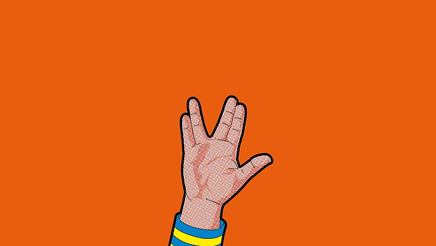

<ion-header [translucent]="true">
  <ion-toolbar>
    <ion-title class="titulopagina">
      Sobre
    </ion-title>
  </ion-toolbar>
</ion-header>

<ion-content [fullscreen]="true">
  <ion-header collapse="condense">
    <ion-toolbar>
      <ion-title size="large">Sobre</ion-title>
    </ion-toolbar>
  </ion-header >
  <ion-item class="texto_inicial">
    <ion-icon slot="start" name="hardware-chip-outline"></ion-icon>
    <ion-icon slot="end" name="terminal-outline"></ion-icon>
    <ion-label>"Um aluno da <br>UninCor<br>  que é apaixonado  <br>pela cultura GeeK"</ion-label>
  </ion-item>
  
  

  <ion-item class="texto_inicial2">
    <ion-icon slot="start" name="school-outline"></ion-icon>
    <ion-icon slot="end" name="school-outline"></ion-icon>
    <ion-label>Desenvolvido por: <br> Albert Allan Ramos</ion-label>
  </ion-item>
  
  <br>
  <ion-fab vertical="bottom" horizontal="end " slot="fixed" (click)="novaOpiniao()">
    <ion-fab-button>
      <ion-icon name="logo-wechat"></ion-icon>   
    </ion-fab-button>
  </ion-fab>
</ion-content>
